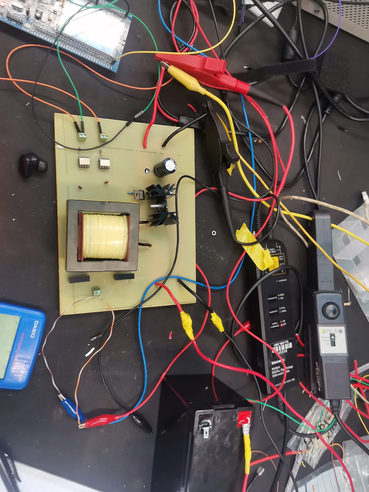
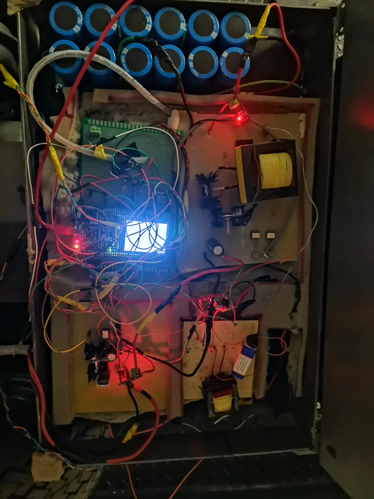

Hybrid energy storage for an electric go-kart
Optimizing energy efficiency and performance for next-generation electric vehicles.
Context / problem
This project focused on a hybrid energy storage system (HESS) for an electric go-kart. It combines a supercapacitor and battery to improve power delivery and reduce battery stress, with regenerative braking and dynamic load management as key design considerations.
My role / system implementation
- Designed and Implemented a bidirectional DC-DC converter for managing energy flow between the supercapacitor and battery.
- Designed a fuzzy logic-based energy management system for optimizing energy distribution.
- Developed a motor driver and control system for regenerative braking to store energy in the supercapacitor.
- Tested and refined the control system for handling various operational scenarios, such as rapid acceleration and deceleration.
Engineering decisions
The HESS setup leverages the complementary strengths of batteries and supercapacitors. The supercapacitor handles high-power, short-duration demands like acceleration and regenerative braking, while the battery provides sustained energy for longer durations. This hybrid approach:
- Prolongs battery life by reducing high-current stress.
- Improves vehicle performance during rapid load changes.
- Maximizes energy recovery during deceleration.
Challenges
Several challenges were addressed during this project:
- Directing regenerative energy to the supercapacitor without damaging the battery.
- Ensuring seamless integration of the fuzzy logic controller for real-time energy management.
- Managing voltage spikes in the H-bridge to protect MOSFETs.
Architecture

Technologies
STM32 · C · circuit and PCB design · battery management · supercapacitors · MATLAB / Simulink
TODO: Confirm the public source-code URL. The repository linked in the previous version currently returns 404.
Project Gallery



Project Videos
Model outcomes
The original write-up reports the following model-based results, using an internal-resistance battery model. These are not presented as measured vehicle performance:
- 14.6% improvement in acceleration response.
- 1.7% Increased energy recovery efficiency during regenerative braking.
- 2.1 % Enhanced battery lifespan by reducing high-current demands.
- Range improvement: the original figure “2.7” has no stated unit or baseline and requires review.
TODO: Add the model assumptions, comparison baseline and calculation or simulation outputs supporting these figures, including the lifespan estimate.